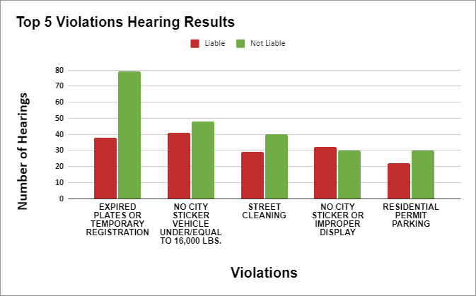

Alderman Ariel Reboyras
8%
tickets contested (Ranked #33)
_______________________________
62%
contested and found not liable
(Ranked #41)
Top 5 Violations
Expired plates or temporary registration (117 hearings).
67.5% found to be not liable!
No city sticker on a sub-16000 pound vehicle (89 hearings).
54% found to be not liable!
Street cleaning (69 hearings).
58% found to be not liable!
No city sticker/improper display (62 hearings).
48% found to be not liable!
Residential permit markings (52 hearings).
58% found to be not liable!
For more information about the statistics in your ward, visit the ProPublica website